Ticker: BTC-USD · period=60d · interval=5m · generated_at=2026-03-08 10:07 UTC
这份报告分 4 轮：round1 做局部参数网格，round2 扩样本检查 15m 动量阈值，round3 做多资产 + 多参数稳定性分析，round4 则检查这些候选组合在更长时间上的 OOS / rolling 稳定性。
pullback_lookback 根内出现逆向 bar，且该阶段平均 vol_z < 0breakout_lookback 根高点/低点，且 vol_z > vol_recover_th| variant | pullback_lookback | vol_recover_th | breakout_lookback | signal_count | trades | win_rate | avg_ret | median_ret | total_return | max_drawdown | long_trades | short_trades |
|---|---|---|---|---|---|---|---|---|---|---|---|---|
| baseline | NaN | NaN | NaN | NaN | 194 | 0.3247 | -0.0002 | -0.0057 | -0.0711 | -0.2446 | 97 | 97 |
| confirmation | 1.0000 | 1.5000 | 3.0000 | 16.0000 | 10 | 0.6000 | 0.0239 | 0.0294 | 0.2397 | -0.1278 | 5 | 5 |
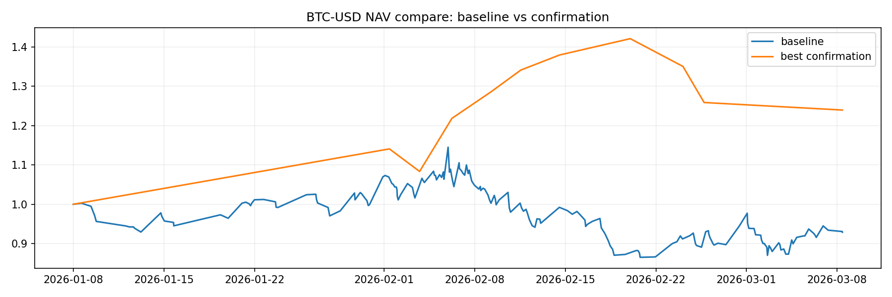
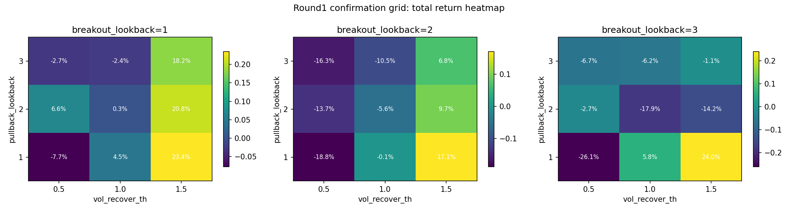
当前 best combo：pullback_lookback=1, vol_recover_th=1.5, breakout_lookback=3
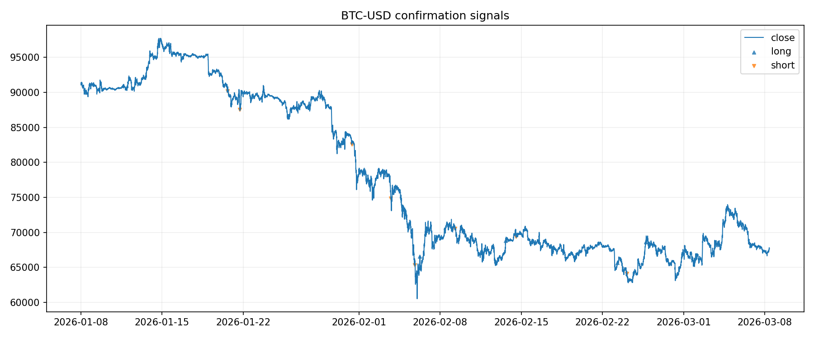
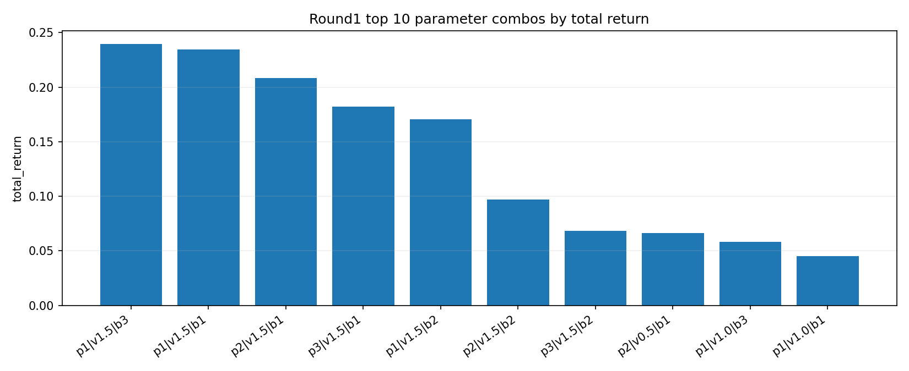
| variant | pullback_lookback | vol_recover_th | breakout_lookback | signal_count | long_signal_count | short_signal_count | symbol | trades | win_rate | avg_ret | median_ret | total_return | max_drawdown | long_trades | short_trades |
|---|---|---|---|---|---|---|---|---|---|---|---|---|---|---|---|
| confirmation | 1 | 1.5000 | 3 | 16 | 8 | 8 | BTC-USD | 10 | 0.6000 | 0.0239 | 0.0294 | 0.2397 | -0.1278 | 5 | 5 |
| confirmation | 1 | 1.5000 | 1 | 29 | 13 | 16 | BTC-USD | 15 | 0.6000 | 0.0159 | 0.0127 | 0.2345 | -0.1143 | 8 | 7 |
| confirmation | 2 | 1.5000 | 1 | 40 | 18 | 22 | BTC-USD | 16 | 0.5625 | 0.0131 | 0.0184 | 0.2084 | -0.1120 | 8 | 8 |
| confirmation | 3 | 1.5000 | 1 | 54 | 22 | 32 | BTC-USD | 23 | 0.5217 | 0.0083 | 0.0096 | 0.1821 | -0.1891 | 12 | 11 |
| confirmation | 1 | 1.5000 | 2 | 19 | 10 | 9 | BTC-USD | 11 | 0.5455 | 0.0167 | 0.0285 | 0.1706 | -0.1278 | 6 | 5 |
| confirmation | 2 | 1.5000 | 2 | 31 | 15 | 16 | BTC-USD | 14 | 0.4286 | 0.0081 | -0.0058 | 0.0969 | -0.1120 | 7 | 7 |
| confirmation | 3 | 1.5000 | 2 | 46 | 20 | 26 | BTC-USD | 21 | 0.3810 | 0.0044 | -0.0020 | 0.0682 | -0.1891 | 11 | 10 |
| confirmation | 2 | 0.5000 | 1 | 83 | 35 | 48 | BTC-USD | 38 | 0.3947 | 0.0023 | -0.0080 | 0.0664 | -0.2953 | 19 | 19 |
| confirmation | 1 | 1.0000 | 3 | 19 | 9 | 10 | BTC-USD | 12 | 0.5000 | 0.0072 | -0.0046 | 0.0584 | -0.2553 | 6 | 6 |
| confirmation | 1 | 1.0000 | 1 | 38 | 16 | 22 | BTC-USD | 17 | 0.4118 | 0.0043 | -0.0091 | 0.0450 | -0.2428 | 9 | 8 |
| confirmation | 2 | 1.0000 | 1 | 48 | 21 | 27 | BTC-USD | 24 | 0.3333 | 0.0011 | -0.0138 | 0.0034 | -0.2567 | 12 | 12 |
| confirmation | 1 | 1.0000 | 2 | 22 | 11 | 11 | BTC-USD | 13 | 0.4615 | 0.0024 | -0.0378 | -0.0006 | -0.2553 | 7 | 6 |
| confirmation | 3 | 1.5000 | 3 | 41 | 18 | 23 | BTC-USD | 21 | 0.3810 | 0.0006 | -0.0020 | -0.0113 | -0.1891 | 11 | 10 |
| confirmation | 3 | 1.0000 | 1 | 70 | 29 | 41 | BTC-USD | 29 | 0.3793 | 0.0002 | -0.0107 | -0.0235 | -0.2183 | 15 | 14 |
| confirmation | 3 | 0.5000 | 1 | 111 | 46 | 65 | BTC-USD | 49 | 0.3265 | -0.0001 | -0.0077 | -0.0266 | -0.2837 | 25 | 24 |
| confirmation | 2 | 0.5000 | 3 | 55 | 24 | 31 | BTC-USD | 28 | 0.3929 | -0.0003 | -0.0073 | -0.0273 | -0.2338 | 14 | 14 |
| confirmation | 2 | 1.0000 | 2 | 35 | 16 | 19 | BTC-USD | 20 | 0.3500 | -0.0016 | -0.0175 | -0.0555 | -0.2671 | 10 | 10 |
| confirmation | 3 | 1.0000 | 3 | 53 | 23 | 30 | BTC-USD | 25 | 0.4000 | -0.0013 | -0.0060 | -0.0619 | -0.2088 | 13 | 12 |
| confirmation | 3 | 0.5000 | 3 | 86 | 36 | 50 | BTC-USD | 39 | 0.3333 | -0.0013 | -0.0068 | -0.0674 | -0.2118 | 20 | 19 |
| confirmation | 1 | 0.5000 | 1 | 53 | 23 | 30 | BTC-USD | 22 | 0.4545 | -0.0027 | -0.0117 | -0.0775 | -0.2124 | 11 | 11 |
| confirmation | 3 | 1.0000 | 2 | 59 | 25 | 34 | BTC-USD | 27 | 0.3704 | -0.0029 | -0.0101 | -0.1046 | -0.2489 | 14 | 13 |
| confirmation | 2 | 0.5000 | 2 | 64 | 28 | 36 | BTC-USD | 32 | 0.3125 | -0.0039 | -0.0112 | -0.1370 | -0.3156 | 16 | 16 |
| confirmation | 2 | 1.5000 | 3 | 25 | 12 | 13 | BTC-USD | 14 | 0.3571 | -0.0092 | -0.0153 | -0.1417 | -0.2654 | 7 | 7 |
| confirmation | 3 | 0.5000 | 2 | 95 | 40 | 55 | BTC-USD | 43 | 0.2791 | -0.0036 | -0.0118 | -0.1627 | -0.2870 | 22 | 21 |
| confirmation | 2 | 1.0000 | 3 | 28 | 13 | 15 | BTC-USD | 18 | 0.3889 | -0.0094 | -0.0188 | -0.1791 | -0.2856 | 9 | 9 |
| confirmation | 1 | 0.5000 | 2 | 32 | 16 | 16 | BTC-USD | 18 | 0.4444 | -0.0104 | -0.0208 | -0.1879 | -0.2170 | 9 | 9 |
| confirmation | 1 | 0.5000 | 3 | 29 | 14 | 15 | BTC-USD | 17 | 0.4118 | -0.0162 | -0.0195 | -0.2607 | -0.2987 | 8 | 9 |
数据源：Binance 180d 5m。固定 round1 最优确认结构，只扫描 threshold_15m ∈ [0.002, 0.004, 0.006]。
| variant | threshold_15m | sample_source | symbol | trades | win_rate | avg_ret | median_ret | total_return | max_drawdown | long_trades | short_trades | signal_count | long_signal_count | short_signal_count | fixed_pullback_lookback | fixed_vol_recover_th | fixed_breakout_lookback |
|---|---|---|---|---|---|---|---|---|---|---|---|---|---|---|---|---|---|
| baseline_long_sample | 0.0020 | Binance 180d 5m | BTC-USD | 886 | 0.2912 | -0.0010 | -0.0039 | -0.6078 | -0.6360 | 443 | 443 | NaN | NaN | NaN | NaN | NaN | NaN |
| baseline_long_sample | 0.0040 | Binance 180d 5m | BTC-USD | 616 | 0.3360 | -0.0007 | -0.0049 | -0.3886 | -0.4482 | 308 | 308 | NaN | NaN | NaN | NaN | NaN | NaN |
| baseline_long_sample | 0.0060 | Binance 180d 5m | BTC-USD | 438 | 0.3379 | -0.0007 | -0.0057 | -0.2967 | -0.3779 | 219 | 219 | NaN | NaN | NaN | NaN | NaN | NaN |
| confirmation_long_sample | 0.0020 | Binance 180d 5m | BTC-USD | 43 | 0.5581 | 0.0046 | 0.0068 | 0.1571 | -0.2574 | 22 | 21 | 104.0000 | 41.0000 | 63.0000 | 1.0000 | 1.5000 | 3.0000 |
| confirmation_long_sample | 0.0040 | Binance 180d 5m | BTC-USD | 31 | 0.5161 | 0.0026 | 0.0005 | 0.0249 | -0.1875 | 16 | 15 | 76.0000 | 29.0000 | 47.0000 | 1.0000 | 1.5000 | 3.0000 |
| confirmation_long_sample | 0.0060 | Binance 180d 5m | BTC-USD | 25 | 0.5200 | 0.0126 | 0.0077 | 0.2904 | -0.1915 | 13 | 12 | 48.0000 | 19.0000 | 29.0000 | 1.0000 | 1.5000 | 3.0000 |
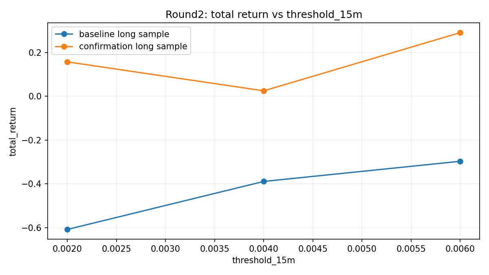
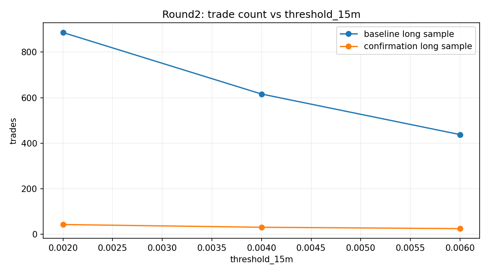
数据源：Yahoo 60d 5m (standardized cross-asset sample)。资产：510300.SS, BTC-USD, ETH-USD, QQQ, SPY。这里不只看“最优点”，而是看多资产、多参数下的 稳定性统计。
| threshold_15m | pullback_lookback | vol_recover_th | breakout_lookback | assets_tested | positive_assets | mean_total_return | median_total_return | std_total_return | min_total_return | max_total_return | mean_max_drawdown | mean_trades | min_trades | positive_asset_ratio |
|---|---|---|---|---|---|---|---|---|---|---|---|---|---|---|
| 0.0050 | 2 | 1.0000 | 1 | 5 | 4 | 0.1000 | 0.0271 | 0.1314 | -0.0084 | 0.3093 | -0.0622 | 14.4000 | 2 | 0.8000 |
| 0.0040 | 2 | 1.0000 | 1 | 5 | 3 | 0.1220 | 0.0271 | 0.1802 | -0.0160 | 0.4009 | -0.0703 | 18.0000 | 2 | 0.6000 |
| 0.0030 | 2 | 1.0000 | 1 | 5 | 3 | 0.1093 | 0.0271 | 0.1669 | -0.0346 | 0.3556 | -0.0766 | 19.4000 | 2 | 0.6000 |
| 0.0050 | 2 | 1.5000 | 1 | 5 | 3 | 0.1293 | 0.0079 | 0.1741 | 0.0000 | 0.3397 | -0.0410 | 10.0000 | 0 | 0.6000 |
| 0.0040 | 2 | 1.0000 | 3 | 5 | 3 | 0.1493 | 0.0006 | 0.2577 | -0.0082 | 0.5909 | -0.0653 | 13.6000 | 2 | 0.6000 |
| 0.0030 | 2 | 1.0000 | 3 | 5 | 3 | 0.1300 | 0.0006 | 0.2278 | -0.0226 | 0.5134 | -0.0742 | 14.2000 | 2 | 0.6000 |
| 0.0030 | 1 | 1.5000 | 1 | 5 | 2 | 0.2182 | 0.0000 | 0.3080 | -0.0151 | 0.6055 | -0.0516 | 9.0000 | 0 | 0.4000 |
| 0.0040 | 2 | 1.5000 | 1 | 5 | 2 | 0.1821 | 0.0000 | 0.2840 | -0.0212 | 0.6060 | -0.0549 | 12.0000 | 0 | 0.4000 |
| 0.0030 | 2 | 1.5000 | 1 | 5 | 2 | 0.1770 | 0.0000 | 0.2746 | -0.0212 | 0.5807 | -0.0549 | 12.4000 | 0 | 0.4000 |
| 0.0040 | 1 | 1.5000 | 1 | 5 | 2 | 0.1753 | 0.0000 | 0.2501 | -0.0151 | 0.5006 | -0.0561 | 8.6000 | 0 | 0.4000 |
| 0.0050 | 1 | 1.5000 | 1 | 5 | 2 | 0.1253 | 0.0000 | 0.1804 | 0.0000 | 0.3919 | -0.0531 | 8.0000 | 0 | 0.4000 |
| 0.0060 | 1 | 1.5000 | 1 | 5 | 2 | 0.1253 | 0.0000 | 0.1804 | 0.0000 | 0.3919 | -0.0531 | 8.0000 | 0 | 0.4000 |
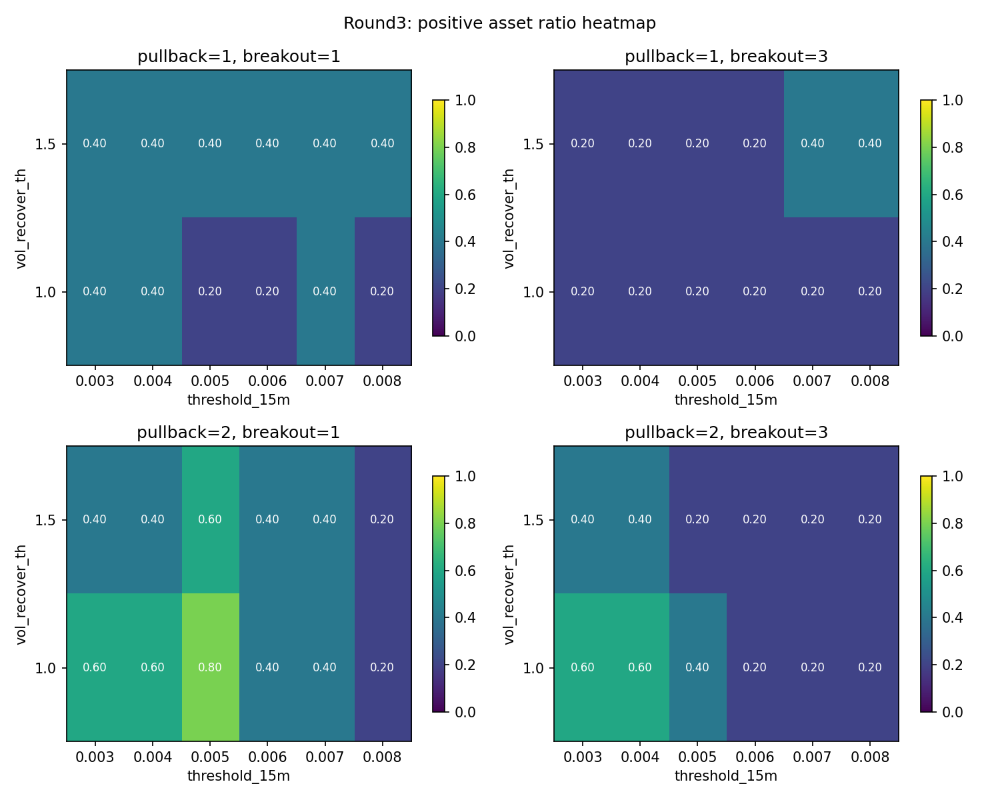
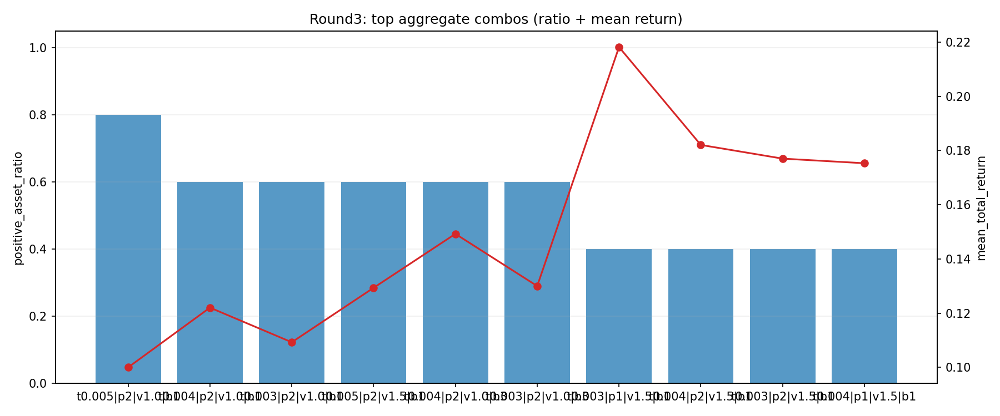
| variant | asset | sample_source | threshold_15m | pullback_lookback | vol_recover_th | breakout_lookback | signal_count | long_signal_count | short_signal_count | symbol | trades | win_rate | avg_ret | median_ret | total_return | max_drawdown | long_trades | short_trades |
|---|---|---|---|---|---|---|---|---|---|---|---|---|---|---|---|---|---|---|
| round3_confirmation | 510300.SS | Yahoo 60d 5m (standardized cross-asset sample) | 0.0050 | 2 | 1.0000 | 1 | 4 | 2 | 2 | 510300.SS | 4 | 0.5000 | 0.0069 | 0.0100 | 0.0271 | -0.0200 | 2 | 2 |
| round3_confirmation | BTC-USD | Yahoo 60d 5m (standardized cross-asset sample) | 0.0050 | 2 | 1.0000 | 1 | 56 | 23 | 33 | BTC-USD | 24 | 0.3750 | 0.0068 | -0.0115 | 0.1484 | -0.1858 | 12 | 12 |
| round3_confirmation | ETH-USD | Yahoo 60d 5m (standardized cross-asset sample) | 0.0050 | 2 | 1.0000 | 1 | 105 | 39 | 66 | ETH-USD | 39 | 0.5128 | 0.0080 | 0.0030 | 0.3093 | -0.0906 | 19 | 20 |
| round3_confirmation | QQQ | Yahoo 60d 5m (standardized cross-asset sample) | 0.0050 | 2 | 1.0000 | 1 | 5 | 1 | 4 | QQQ | 3 | 1.0000 | 0.0078 | 0.0079 | 0.0236 | 0.0000 | 1 | 2 |
| round3_confirmation | SPY | Yahoo 60d 5m (standardized cross-asset sample) | 0.0050 | 2 | 1.0000 | 1 | 2 | 1 | 1 | SPY | 2 | 0.5000 | -0.0042 | -0.0042 | -0.0084 | -0.0144 | 1 | 1 |
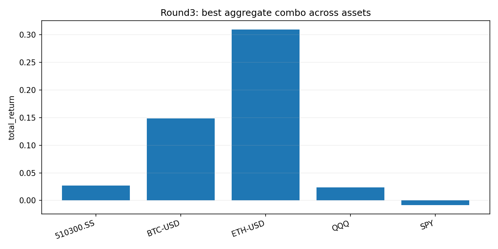
这一步不再全网格暴扫，只拿 round3 最稳的 top3 组合做更长时间的 OOS / rolling 验证。数据源：510300.SS: Yahoo 60d 5m fallback; BTC-USD: Binance 180d 5m; ETH-USD: Binance 180d 5m; QQQ: Yahoo 60d 5m fallback; SPY: Yahoo 60d 5m fallback
| combo_id | combo_label | threshold_15m | pullback_lookback | vol_recover_th | breakout_lookback | positive_asset_ratio | mean_total_return | median_total_return | min_total_return | mean_trades |
|---|---|---|---|---|---|---|---|---|---|---|
| C1 | t0.005|p2|v1.0|b1 | 0.0050 | 2 | 1.0000 | 1 | 0.8000 | 0.1000 | 0.0271 | -0.0084 | 14.4000 |
| C2 | t0.004|p2|v1.0|b1 | 0.0040 | 2 | 1.0000 | 1 | 0.6000 | 0.1220 | 0.0271 | -0.0160 | 18.0000 |
| C3 | t0.003|p2|v1.0|b1 | 0.0030 | 2 | 1.0000 | 1 | 0.6000 | 0.1093 | 0.0271 | -0.0346 | 19.4000 |
| asset | sample_source | rows |
|---|---|---|
| 510300.SS | Yahoo 60d 5m fallback | 2863 |
| BTC-USD | Binance 180d 5m | 51840 |
| ETH-USD | Binance 180d 5m | 51840 |
| QQQ | Yahoo 60d 5m fallback | 4520 |
| SPY | Yahoo 60d 5m fallback | 4520 |
做法：每个资产按时间顺序切成 70% train + 30% OOS。train 只负责“让我们看到组合在旧数据里表现如何”，OOS 才是检验它离开训练区后还能不能活。
| combo_id | combo_label | threshold_15m | pullback_lookback | vol_recover_th | breakout_lookback | assets_tested | positive_oos_assets | mean_train_total_return | mean_oos_total_return | median_oos_total_return | min_oos_total_return | mean_oos_max_drawdown | mean_oos_trades | positive_oos_asset_ratio |
|---|---|---|---|---|---|---|---|---|---|---|---|---|---|---|
| C1 | t0.005|p2|v1.0|b1 | 0.0050 | 2 | 1.0000 | 1 | 5 | 4 | -0.1479 | 0.2747 | 0.0079 | -0.0010 | -0.0593 | 20.6000 | 0.8000 |
| C3 | t0.003|p2|v1.0|b1 | 0.0030 | 2 | 1.0000 | 1 | 5 | 3 | -0.0714 | 0.2648 | 0.0060 | -0.0494 | -0.0767 | 25.6000 | 0.6000 |
| C2 | t0.004|p2|v1.0|b1 | 0.0040 | 2 | 1.0000 | 1 | 5 | 3 | -0.1070 | 0.2251 | 0.0060 | -0.0311 | -0.0929 | 23.0000 | 0.6000 |
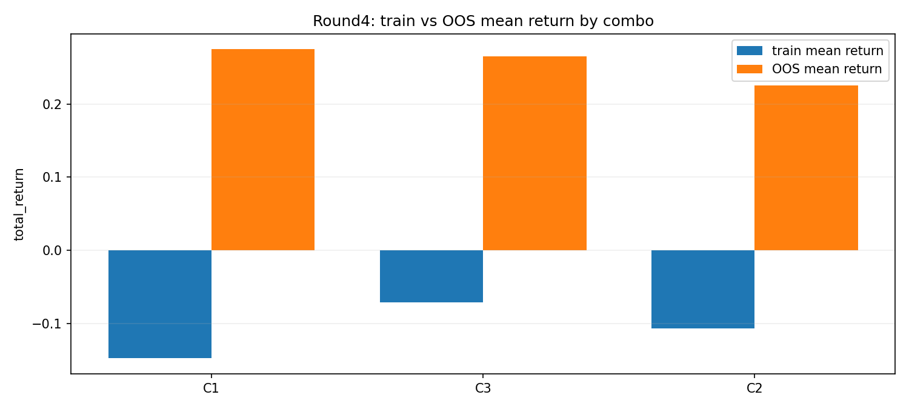
| asset | sample_source | combo_id | combo_label | threshold_15m | pullback_lookback | vol_recover_th | breakout_lookback | train_rows | oos_rows | train_start | train_end | oos_start | oos_end | train_trades | train_total_return | train_max_drawdown | oos_trades | oos_total_return | oos_max_drawdown |
|---|---|---|---|---|---|---|---|---|---|---|---|---|---|---|---|---|---|---|---|
| 510300.SS | Yahoo 60d 5m fallback | C1 | t0.005|p2|v1.0|b1 | 0.0050 | 2 | 1.0000 | 1 | 2004 | 859 | 2025-12-03 01:30:00+00:00 | 2026-02-03 03:10:00+00:00 | 2026-02-03 03:15:00+00:00 | 2026-03-06 06:55:00+00:00 | 3 | 0.0134 | -0.0331 | 1 | -0.0010 | -0.0010 |
| BTC-USD | Binance 180d 5m | C1 | t0.005|p2|v1.0|b1 | 0.0050 | 2 | 1.0000 | 1 | 36288 | 15552 | 2025-09-09 10:05:00+00:00 | 2026-01-13 10:00:00+00:00 | 2026-01-13 10:05:00+00:00 | 2026-03-08 10:00:00+00:00 | 59 | -0.1313 | -0.1874 | 46 | 0.2883 | -0.1230 |
| ETH-USD | Binance 180d 5m | C1 | t0.005|p2|v1.0|b1 | 0.0050 | 2 | 1.0000 | 1 | 36288 | 15552 | 2025-09-09 10:10:00+00:00 | 2026-01-13 10:05:00+00:00 | 2026-01-13 10:10:00+00:00 | 2026-03-08 10:05:00+00:00 | 123 | -0.6598 | -0.6786 | 54 | 1.0722 | -0.1724 |
| QQQ | Yahoo 60d 5m fallback | C1 | t0.005|p2|v1.0|b1 | 0.0050 | 2 | 1.0000 | 1 | 3164 | 1356 | 2025-12-09 14:30:00+00:00 | 2026-02-10 18:25:00+00:00 | 2026-02-10 18:30:00+00:00 | 2026-03-06 20:55:00+00:00 | 2 | 0.0290 | 0.0000 | 1 | 0.0079 | 0.0000 |
| SPY | Yahoo 60d 5m fallback | C1 | t0.005|p2|v1.0|b1 | 0.0050 | 2 | 1.0000 | 1 | 3164 | 1356 | 2025-12-09 14:30:00+00:00 | 2026-02-10 18:25:00+00:00 | 2026-02-10 18:30:00+00:00 | 2026-03-06 20:55:00+00:00 | 1 | 0.0091 | 0.0000 | 1 | 0.0060 | 0.0000 |
| 510300.SS | Yahoo 60d 5m fallback | C2 | t0.004|p2|v1.0|b1 | 0.0040 | 2 | 1.0000 | 1 | 2004 | 859 | 2025-12-03 01:30:00+00:00 | 2026-02-03 03:10:00+00:00 | 2026-02-03 03:15:00+00:00 | 2026-03-06 06:55:00+00:00 | 3 | 0.0134 | -0.0331 | 1 | -0.0010 | -0.0010 |
| BTC-USD | Binance 180d 5m | C2 | t0.004|p2|v1.0|b1 | 0.0040 | 2 | 1.0000 | 1 | 36288 | 15552 | 2025-09-09 10:05:00+00:00 | 2026-01-13 10:00:00+00:00 | 2026-01-13 10:05:00+00:00 | 2026-03-08 10:00:00+00:00 | 72 | -0.1452 | -0.2349 | 46 | 0.5865 | -0.1024 |
| ETH-USD | Binance 180d 5m | C2 | t0.004|p2|v1.0|b1 | 0.0040 | 2 | 1.0000 | 1 | 36288 | 15552 | 2025-09-09 10:10:00+00:00 | 2026-01-13 10:05:00+00:00 | 2026-01-13 10:10:00+00:00 | 2026-03-08 10:05:00+00:00 | 138 | -0.4417 | -0.5521 | 62 | 0.5650 | -0.3222 |
| QQQ | Yahoo 60d 5m fallback | C2 | t0.004|p2|v1.0|b1 | 0.0040 | 2 | 1.0000 | 1 | 3164 | 1356 | 2025-12-09 14:30:00+00:00 | 2026-02-10 18:25:00+00:00 | 2026-02-10 18:30:00+00:00 | 2026-03-06 20:55:00+00:00 | 2 | 0.0290 | 0.0000 | 5 | -0.0311 | -0.0390 |
| SPY | Yahoo 60d 5m fallback | C2 | t0.004|p2|v1.0|b1 | 0.0040 | 2 | 1.0000 | 1 | 3164 | 1356 | 2025-12-09 14:30:00+00:00 | 2026-02-10 18:25:00+00:00 | 2026-02-10 18:30:00+00:00 | 2026-03-06 20:55:00+00:00 | 1 | 0.0093 | 0.0000 | 1 | 0.0060 | 0.0000 |
| 510300.SS | Yahoo 60d 5m fallback | C3 | t0.003|p2|v1.0|b1 | 0.0030 | 2 | 1.0000 | 1 | 2004 | 859 | 2025-12-03 01:30:00+00:00 | 2026-02-03 03:10:00+00:00 | 2026-02-03 03:15:00+00:00 | 2026-03-06 06:55:00+00:00 | 3 | 0.0134 | -0.0331 | 1 | -0.0010 | -0.0010 |
| BTC-USD | Binance 180d 5m | C3 | t0.003|p2|v1.0|b1 | 0.0030 | 2 | 1.0000 | 1 | 36288 | 15552 | 2025-09-09 10:05:00+00:00 | 2026-01-13 10:00:00+00:00 | 2026-01-13 10:05:00+00:00 | 2026-03-08 10:00:00+00:00 | 82 | 0.0033 | -0.1743 | 52 | 0.4954 | -0.1018 |
| ETH-USD | Binance 180d 5m | C3 | t0.003|p2|v1.0|b1 | 0.0030 | 2 | 1.0000 | 1 | 36288 | 15552 | 2025-09-09 10:10:00+00:00 | 2026-01-13 10:05:00+00:00 | 2026-01-13 10:10:00+00:00 | 2026-03-08 10:05:00+00:00 | 154 | -0.4119 | -0.5434 | 68 | 0.8729 | -0.2314 |
| QQQ | Yahoo 60d 5m fallback | C3 | t0.003|p2|v1.0|b1 | 0.0030 | 2 | 1.0000 | 1 | 3164 | 1356 | 2025-12-09 14:30:00+00:00 | 2026-02-10 18:25:00+00:00 | 2026-02-10 18:30:00+00:00 | 2026-03-06 20:55:00+00:00 | 2 | 0.0290 | 0.0000 | 6 | -0.0494 | -0.0494 |
| SPY | Yahoo 60d 5m fallback | C3 | t0.003|p2|v1.0|b1 | 0.0030 | 2 | 1.0000 | 1 | 3164 | 1356 | 2025-12-09 14:30:00+00:00 | 2026-02-10 18:25:00+00:00 | 2026-02-10 18:30:00+00:00 | 2026-03-06 20:55:00+00:00 | 1 | 0.0093 | 0.0000 | 1 | 0.0060 | 0.0000 |
做法：按 train=20天, test=10天, step=10天 滚动向前。这样我们不会只做一次 OOS，而是反复换时间窗检查参数是否跨时间稳定。
| combo_id | combo_label | threshold_15m | pullback_lookback | vol_recover_th | breakout_lookback | assets_tested | windows_tested | positive_oos_windows | mean_train_total_return | mean_oos_total_return | median_oos_total_return | min_oos_total_return | mean_oos_max_drawdown | mean_oos_trades | positive_window_ratio |
|---|---|---|---|---|---|---|---|---|---|---|---|---|---|---|---|
| C3 | t0.003|p2|v1.0|b1 | 0.0030 | 2 | 1.0000 | 1 | 5 | 49 | 21 | 0.0090 | 0.0054 | 0.0000 | -0.2134 | -0.0478 | 6.8367 | 0.4286 |
| C2 | t0.004|p2|v1.0|b1 | 0.0040 | 2 | 1.0000 | 1 | 5 | 49 | 21 | 0.0024 | 0.0023 | 0.0000 | -0.2134 | -0.0454 | 6.0816 | 0.4286 |
| C1 | t0.005|p2|v1.0|b1 | 0.0050 | 2 | 1.0000 | 1 | 5 | 49 | 15 | -0.0087 | -0.0072 | 0.0000 | -0.2673 | -0.0515 | 5.5102 | 0.3061 |
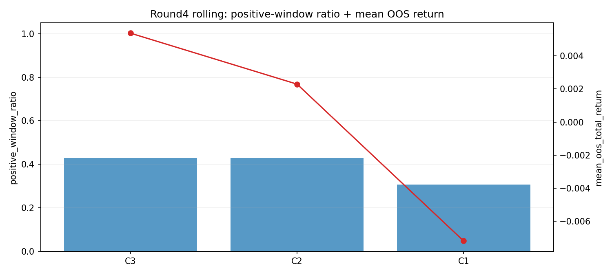
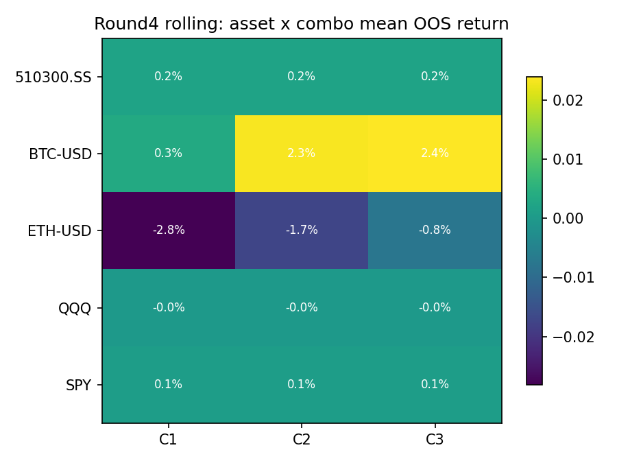
| asset | combo_id | combo_label | windows_tested | positive_window_ratio | mean_oos_total_return | median_oos_total_return |
|---|---|---|---|---|---|---|
| 510300.SS | C1 | t0.005|p2|v1.0|b1 | 7 | 0.1429 | 0.0021 | 0.0000 |
| BTC-USD | C1 | t0.005|p2|v1.0|b1 | 15 | 0.5333 | 0.0034 | 0.0236 |
| ETH-USD | C1 | t0.005|p2|v1.0|b1 | 15 | 0.2667 | -0.0281 | -0.0414 |
| QQQ | C1 | t0.005|p2|v1.0|b1 | 6 | 0.1667 | -0.0000 | 0.0000 |
| SPY | C1 | t0.005|p2|v1.0|b1 | 6 | 0.1667 | 0.0008 | 0.0000 |
| 510300.SS | C2 | t0.004|p2|v1.0|b1 | 7 | 0.1429 | 0.0021 | 0.0000 |
| BTC-USD | C2 | t0.004|p2|v1.0|b1 | 15 | 0.6667 | 0.0233 | 0.0231 |
| ETH-USD | C2 | t0.004|p2|v1.0|b1 | 15 | 0.5333 | -0.0172 | 0.0004 |
| QQQ | C2 | t0.004|p2|v1.0|b1 | 6 | 0.1667 | -0.0000 | 0.0000 |
| SPY | C2 | t0.004|p2|v1.0|b1 | 6 | 0.1667 | 0.0009 | 0.0000 |
| 510300.SS | C3 | t0.003|p2|v1.0|b1 | 7 | 0.1429 | 0.0021 | 0.0000 |
| BTC-USD | C3 | t0.003|p2|v1.0|b1 | 15 | 0.6000 | 0.0239 | 0.0168 |
| ETH-USD | C3 | t0.003|p2|v1.0|b1 | 15 | 0.6000 | -0.0077 | 0.0109 |
| QQQ | C3 | t0.003|p2|v1.0|b1 | 6 | 0.1667 | -0.0000 | 0.0000 |
| SPY | C3 | t0.003|p2|v1.0|b1 | 6 | 0.1667 | 0.0009 | 0.0000 |
| variant | pullback_lookback | vol_recover_th | breakout_lookback | signal_count | long_signal_count | short_signal_count | symbol | trades | win_rate | avg_ret | median_ret | total_return | max_drawdown | long_trades | short_trades |
|---|---|---|---|---|---|---|---|---|---|---|---|---|---|---|---|
| confirmation | 1 | 1.5000 | 3 | 16 | 8 | 8 | BTC-USD | 10 | 0.6000 | 0.0239 | 0.0294 | 0.2397 | -0.1278 | 5 | 5 |
| confirmation | 1 | 1.5000 | 1 | 29 | 13 | 16 | BTC-USD | 15 | 0.6000 | 0.0159 | 0.0127 | 0.2345 | -0.1143 | 8 | 7 |
| confirmation | 2 | 1.5000 | 1 | 40 | 18 | 22 | BTC-USD | 16 | 0.5625 | 0.0131 | 0.0184 | 0.2084 | -0.1120 | 8 | 8 |
| confirmation | 3 | 1.5000 | 1 | 54 | 22 | 32 | BTC-USD | 23 | 0.5217 | 0.0083 | 0.0096 | 0.1821 | -0.1891 | 12 | 11 |
| confirmation | 1 | 1.5000 | 2 | 19 | 10 | 9 | BTC-USD | 11 | 0.5455 | 0.0167 | 0.0285 | 0.1706 | -0.1278 | 6 | 5 |
结论：存在稳健候选区间，确认规则值得继续保留
动作：先看是不是一片区域都还能活，而不是只盯最优点。
结论：恢复触发定义对结果影响明显，是这套规则最敏感的部分之一
动作：后续优先继续审视恢复触发定义（前1根/前2根/前3根高点突破）。
结论：量价确认相对裸动量有增益
动作：若最优组合能稳定改善收益/信号质量，再继续做 cross-market 与 OOS；否则只保留为备选因子。
结论：更长样本里，threshold_15m=0.006 的确认版表现最好，说明 0.006 不是随便拍脑袋出来的，但仍需看邻域和平滑性
动作：把 threshold 当成研究对象，而不是默认 0.006 永远正确。
结论：如果更长样本里交易数明显增加且仍优于 baseline，这套规则的可信度会上升
动作：如果交易数、收益、回撤三者都更平衡，再继续做 cross-market；否则继续把它当作局部确认模块，而非独立主策略。
结论：在多资产/多参数比较里，当前最稳的组合是 threshold_15m=0.005, pullback=2, vol=1.0, breakout=1；它在 4/5 个资产上为正。
动作：不要只盯 mean return，要同时看 positive_asset_ratio 和最差资产表现。
结论：多自变量稳定性，优先看正收益资产占比、平均/中位收益、最差资产表现、平均交易数，而不是只看单个最优回测。
动作：以后做多变量稳健性报告，默认至少给出：热图、聚合表、最佳组合的资产拆分表。
结论：round4 的单次 OOS 里，C1 在 4/5 个资产上保持样本外正收益，说明它离开训练区后仍有一定生命力。
动作：训练集收益再好，也要盯住 OOS 的正收益资产占比和最差资产表现。
结论：rolling 里当前最稳的是 C3，positive_window_ratio=0.43，mean_oos_total_return=0.0054。如果它领先但幅度不大，说明应保留‘参数区间’，而不是迷信单点。
动作：如果 rolling 里只有个别窗口赚钱，就说明它更像阶段性 luck，不像稳健结构。
结论：单次 OOS 更像一次考试，容易刚好踩中有利行情；rolling 是连续多次考试，更能暴露 regime 依赖和时间不稳定。
动作：以后看到单次 OOS 很漂亮时，第一反应不是“参数成了”，而是立刻补 rolling / walk-forward。
结论：当前应保留的是参数结构，而不是单点最优：优先保留 pullback=2、breakout=1、vol_recover_th=1.0。
动作：后续如果继续扩展量价确认，优先围绕这条主结构做增量改造，而不是重新全空间乱扫。
结论：threshold_15m 不建议继续迷信 0.005 单点；更合理的研究决策是先保留 0.003~0.004 区间，因为它们在 rolling 里比 0.005 更耐打。
动作：后续报告里把 0.003~0.004 视为“保留区间”，0.005 视为“样本外曾亮眼但 rolling 较弱”的观察点。
结论：这套规则当前适合继续作为趋势确认模块，尤其在 crypto 里值得保留；但证据还不支持把它升级成独立稳健主因子。
动作：研究流程上继续保留它，但把后续资源投入到：更严格跨时间验证、跨市场扩展、以及和其他确认因子的组合。
pullback=2breakout=1vol_recover_th=1.0threshold_15m=0.003~0.0040.005 单点一句话总结：round3 告诉我们“它有候选区间”，round4 告诉我们“它还没通过更严格的跨时间稳定性考试”。